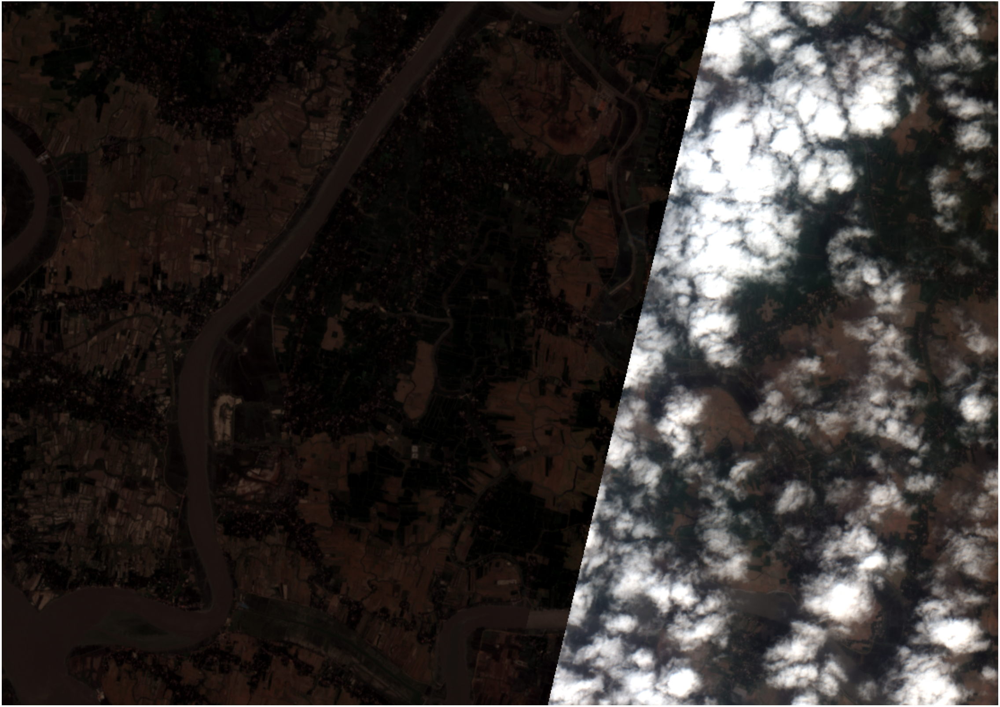
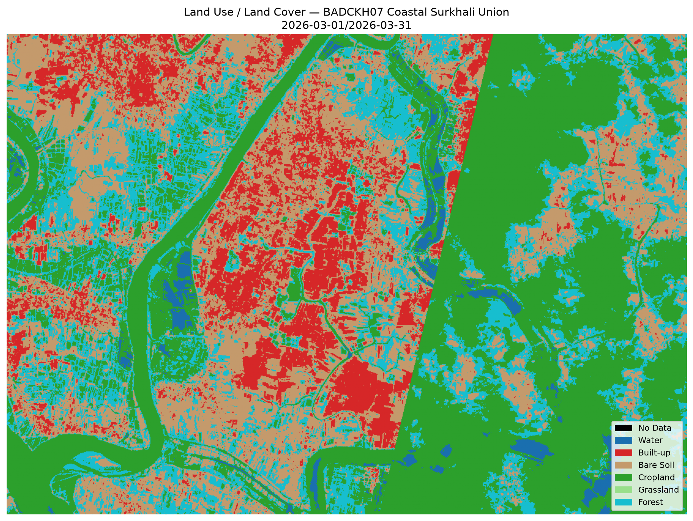

Sub-meter precision for small plots
Bangladeshi vegetable plots average 0.1-0.3 hectares — we deliver at that scale

True-Color RGB
Sub-meter WorldView-3 imagery for individual plot boundaries.

Crop Classification
Vegetable vs. paddy vs. fallow — supports contract acreage verification.

Health Dashboard
NDVI/NDRE/NDWI stack for micro-plot stress detection.